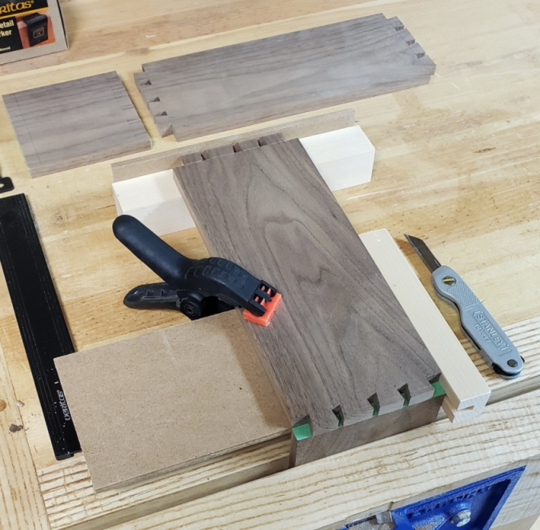
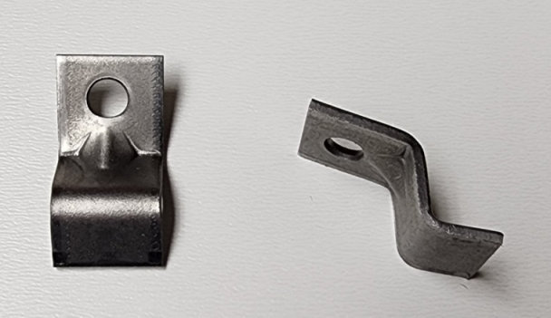
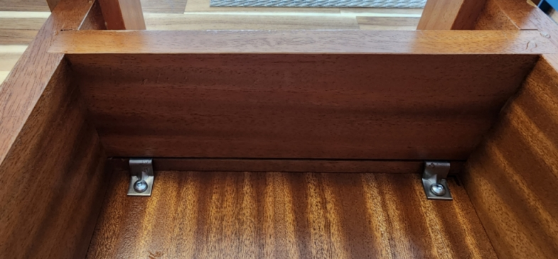

Tips and Techniques
Dovetail Drawer General Guidance
-
Drawer fronts ¾" to 7/8", sides and back 3/8" to ½"
-
Drawer back ½" narrower than the sides to accommodate the bottom
-
The length of the sides should be approximately ½" shorter than the depth of the drawer opening in the case
-
Grooves for the bottom ¼" wide by ¼" deep and ¼" up from the bottom
-
Dovetail angle 1:6 ratio for softwood and 1:8 for hardwood
-
Slotted hole for the bottom to allow for wood movement, with grain running from side to side

I'll settle it upfront. I'm a tails-first person. I've tried both tails first and pins first, and using the technique I've developed over time, tails first works best. Improving dovetail joint making proficiency requires practice. A few key points to ensure decent dovetail joints:
Tails
-
The top factors that influence my dovetail results are ensuring the tails are cut square to the face and don't pass the baseline mark for the height (set with a stop block if needed)
-
Mark one side for the tails and clamp the two boards together to cut them at once
-
Clear out most of the waste before paring to the baseline
Pins
-
Tape (with painter's tape) the end grain of the board and trim off the excess
-
Ensure the tail board is set properly in place and knife along each tail wall
-
Remove the tape from the waste section to provide a clear guide to saw and chisel to
Attaching Tabletops
So far, I have tried two methods to attach tabletops. The key is to employ a system that allows for the expansion and contraction of the tabletop through the seasons. Depending on the type of wood and the width of the tabletop, considerable wood movement is possible and the proper attachment is critical to counteract the resulting stress that can be applied to a table.
Z-clips
The first and easiest method uses Z-clips (Lee Valley Tabletop Clamps). Cut a groove into the table sides (rails) to insert the Z-clip into, then screw the clip to the underside of the table. Metal fasteners aren't the most aesthetic method, but how often do people look under a table to see how it is attached. Also, Z-clips come in handy when there isn't enough space for buttons.


Buttons
The second method uses hardwood buttons and is the same concept as Z-clips but offers a more traditional and aesthetically pleasing option. Buttons are small hardwood blocks with a half-lap joint on one end that fits into a slot cut into the rail. The button is screwed in the tabletop.
Buttons are ¾" thick, 1" wide, and 1 ½" to 2" long, with the grain running the length. The half-lap tenon is cut is 3/8" thick and ¼" to 3/8" long.
The mortise is cut into the rails before assembling the table and positioned slightly lower on the rail than the space from the top of the button to the top of the half-lap tenon. If secured at the front of the table cut the rear rail mortises deeper to allow movement of the tabletop towards the back of the table.